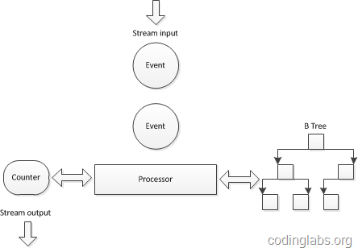

简介
申明：自己在学Redis的时候，看到了HyperLogLog，想了解一下基数计数，刚好看到CodingLabs（张洋）对这部分有详细介绍，觉得确实写得不错，所以看完之后，直接转了。推导部分看的不是很明白[其实很多不懂]，最大似然，无偏估计，中心极限定理等概念都比较模糊了，只能抽空去看看大学教材《概率论与数理统计》了。
基数计数（cardinality counting）是实际应用中一种常见的计算场景，在数据分析、网络监控及数据库优化等领域都有相关需求。精确的基数计数算法由于种种原因，在面对大数据场景时往往力不从心，因此如何在误差可控的情况下对基数进行估计就显得十分重要。目前常见的基数估计算法有Linear Counting、LogLog Counting、HyperLogLog Counting及Adaptive Counting等。这几种算法都是基于概率统计理论所设计的概率算法，它们克服了精确基数计数算法的诸多弊端（如内存需求过大或难以合并等），同时可以通过一定手段将误差控制在所要求的范围内。
作为“解读Cardinality Estimation算法”系列文章的第一部分，本文将首先介绍基数的概念，然后通过一个电商数据分析的例子说明基数如何在具体业务场景中发挥作用以及为什么在大数据面前基数的计算是困难的，在这一部分也同时会详述传统基数计数的解决方案及遇到的难题。
后面在第二部分-第四部分会分别详细介绍Linear Counting、LogLog Counting、HyperLogLog Counting及Adaptive Counting四个算法，会涉及算法的基本思路、概率分析及论文关键部分的解读。
文章索引：
第一部分：基本概念
第二部分：Linear Counting
第三部分：LogLog Counting
第四部分：HyperLogLog Counting及Adaptive Counting
基数的定义
简单来说，基数（cardinality，也译作势），是指一个集合（这里的集合允许存在重复元素，与集合论对集合严格的定义略有不同，如不做特殊说明，本文中提到的集合均允许存在重复元素）中不同元素的个数。例如看下面的集合：
{1,2,3,4,5,2,3,9,7}
这个集合有9个元素，但是2和3各出现了两次，因此不重复的元素为1,2,3,4,5,9,7，所以这个集合的基数是7。
如果两个集合具有相同的基数，我们说这两个集合等势。基数和等势的概念在有限集范畴内比较直观，但是如果扩展到无限集则会比较复杂，一个无限集可能会与其真子集等势（例如整数集和偶数集是等势的）。不过在这个系列文章中，我们仅讨论有限集的情况，关于无限集合基数的讨论，有兴趣的同学可以参考实变分析相关内容。
容易证明，如果一个集合是有限集，则其基数是一个自然数。
基数的应用实例
下面通过一个实例说明基数在电商数据分析中的应用。
假设一个淘宝网店在其店铺首页放置了10个宝贝链接，分别从Item01到Item10为这十个链接编号。店主希望可以在一天中随时查看从今天零点开始到目前这十个宝贝链接分别被多少个独立访客点击过。所谓独立访客（Unique Visitor，简称UV）是指有多少个自然人，例如，即使我今天点了五次Item01，我对Item01的UV贡献也是1，而不是5。
用术语说这实际是一个实时数据流统计分析问题。
要实现这个统计需求。需要做到如下三点：
对独立访客做标识
在访客点击链接时记录下链接编号及访客标记
对每一个要统计的链接维护一个数据结构和一个当前UV值，当某个链接发生一次点击时，能迅速定位此用户在今天是否已经点过此链接，如果没有则此链接的UV增加1
下面分别介绍三个步骤的实现方案
对独立访客做标识
客观来说，目前还没有能在互联网上准确对一个自然人进行标识的方法，通常采用的是近似方案。例如通过登录用户+cookie跟踪的方式：当某个用户已经登录，则采用会员ID标识；对于未登录用户，则采用跟踪cookie的方式进行标识。为了简单起见，我们假设完全采用跟踪cookie的方式对独立访客进行标识。
记录链接编号及访客标记
这一步可以通过javascript埋点及记录accesslog完成，具体原理和实现方案可以参考我之前的一篇文章：网站统计中的数据收集原理及实现。
实时UV计算
可以看到，如果将每个链接被点击的日志中访客标识字段看成一个集合，那么此链接当前的UV也就是这个集合的基数，因此UV计算本质上就是一个基数计数问题。
在实时计算流中，我们可以认为任何一次链接点击均触发如下逻辑（伪代码描述）：
1 | cand_counting(item_no, user_id) { |
逻辑非常简单，每当有一个点击事件发生，就去相应的链接被访集合中寻找此访客是否已经在里面，如果没有则将此用户标识加入集合，并将此链接的UV加1。
虽然逻辑非常简单，但是在实际实现中尤其面临大数据场景时还是会遇到诸多困难，下面一节我会介绍两种目前被业界普遍使用的精确算法实现方案，并通过分析说明当数据量增大时它们面临的问题。
传统的基数计数实现
接着上面的例子，我们看一下目前常用的基数计数的实现方法。
基于B树的基数计数
对上面的伪代码做一个简单分析，会发现关键操作有两个：查找-迅速定位当前访客是否已经在集合中，插入-将新的访客标识插入到访客集合中。因此，需要为每一个需要统计UV的点（此处就是十个宝贝链接）维护一个查找效率较高的数据结构，又因为实时数据流的关系，这个数据结构需要尽量在内存中维护，因此这个数据结构在空间复杂度上也要比较适中。综合考虑一种传统的做法是在实时计算引擎采用了B树来组织这个集合。下图是一个示意图：

之所以选用B树是因为B树的查找和插入相关高效，同时空间复杂度也可以接受（关于B树具体的性能分析请参考这里)。
这种实现方案为一个基数计数器维护一棵B树，由于B树在查找效率、插入效率和内存使用之间非常平衡，所以算是一种可以接受的解决方案。但是当数据量特别巨大时，例如要同时统计几万个链接的UV，如果要将几万个链接一天的访问记录全部维护在内存中，这个内存使用量也是相当可观的（假设每个B树占用1M内存，10万个B树就是100G！）。一种方案是在某个时间点将内存数据结构写入磁盘（双十一和双十二大促时一淘数据部的效果平台是每分钟将数据写入HBase）然后将内存中的计数器和数据结构清零，但是B树并不能高效的进行合并，这就使得内存数据落地成了非常大的难题。
另一个需要数据结构合并的场景是查看并集的基数，例如在上面的例子中，如果我想查看Item1和Item2的总UV，是没有办法通过这种B树的结构快速得到的。当然可以为每一种可能的组合维护一棵B树。不过通过简单的分析就可以知道这个方案基本不可行。N个元素集合的非空幂集数量为$2^N−1$，因此要为10个链接维护1023棵B树，而随着链接的增加这个数量会以幂指级别增长。
基于bitmap的基数计数
为了克服B树不能高效合并的问题，一种替代方案是使用bitmap表示集合。也就是使用一个很长的bit数组表示集合，将bit位顺序编号，bit为1表示此编号在集合中，为0表示不在集合中。例如“00100110”表示集合 {2，5，6}。bitmap中1的数量就是这个集合的基数。
显然，与B树不同bitmap可以高效的进行合并，只需进行按位或（or）运算就可以，而位运算在计算机中的运算效率是很高的。但是bitmap方式也有自己的问题，就是内存使用问题。
很容易发现，bitmap的长度与集合中元素个数无关，而是与基数的上限有关。例如在上面的例子中，假如要计算上限为1亿的基数，则需要12.5M字节的bitmap，十个链接就需要125M。关键在于，这个内存使用与集合元素数量无关，即使一个链接仅仅有一个1UV，也要为其分配12.5M字节。
由此可见，虽然bitmap方式易于合并，却由于内存使用问题而无法广泛用于大数据场景。
小结
本文重点在于通过电商数据分析中UV计算的例子，说明基数的应用、传统的基数计数算法及这些算法在大数据面前遇到的问题。实际上目前还没有发现更好的在大数据场景中准确计算基数的高效算法，因此在不追求绝对准确的情况下，使用概率算法算是一个不错的解决方案。在后续文章中，我将逐一解读常用的基数估计概率算法。